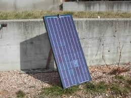
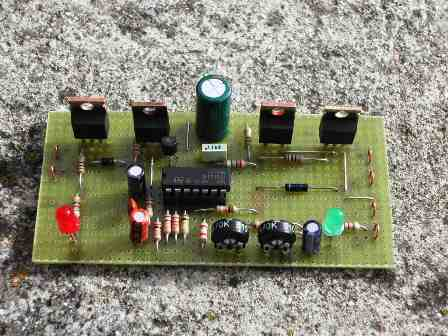

Ogni tanto ci scappa una digressione dalla chimica, in genere verso l'elettronica, un altro dei miei passatempi.
Avendo a disposizione il bel modulo fotovoltaico da 50 Watt che si vede in foto (la dimensione ideale per giocarci e sperimentare), l'ho voluto corredare di un regolatore automatico di carica batteria.

Questo apparecchietto è un'interfaccia tra il pannello solare, la batteria in tampone ed il carico utilizzatore e serve ad evitare le eccessive carica o scarica della batteria.
Quando il sole picchia e la batteria è sufficientemente carica, l'uscita del fotovoltaico viene cortocircuitata; quando il sole manca e la batteria è quasi scarica l'uscita verso l'utilizzatore viene interrotta, salvaguardando in questi modi la vita della batteria stessa.
Naturalmente apparecchietti di questo tipo si trovano in commercio (quasi sempre provenienti dal paese dei Mandarini) senza problemi e per soli una quarantina di euro.
Ma lo si può fare anche in casa con un po' di esperienza per un prezzo irrisorio e anche divertendosi.
E' quel che ho fatto, spendendo per la parte elettronica... circa cinque euro!
(Se ho speso IO 5 €, mi chiedo quanto costi ad una azienda cinese che ne fa 300 mila pezzi... Siamo a livello dei centesimi di euro!).
I componenti principali che si vedono sulla basetta millefori (non val la pena di fare un circuito stampato per un solo prototipo) sono due MOSFET di potenza IRFZ44N, due diodi schottky CQ522, un circuito integrato operazionale LM324 ed una manciata di componenti passivi.
Vi sono due ingressi ed un'uscita: un ingresso va al pannello fotovoltaico da 19 Volt, l'altro va alla batteria e l'uscita va al carico utilizzatore, ovvero qualsiasi cosa che funzioni a 12 Volt, per esempio un inverter che porti questa tensione ai 230 volt alternati per far andare qualsiasi cosa.

Veder girare un motorino GRATIS per tutto il giorno (mi serve per un certo utilizzo) e per tutti i giorni a venire fin che batterà il sole è una soddisfazione che mi ha sempre intrigato e che m'intriga sempre più man mano che il vero prezzo dell'energia viene (e verrà, eccome!) drammaticamente sempre più alla ribalta.
Il mio pannellino è solo un terzo di metro quadrato e fa un bel lavoro: pensiamo alle infinite aree su cui il sole splende in eterno ad 1 KW per metro quadro! senza servire nemmeno a far crescere l'erba...
2 commenti